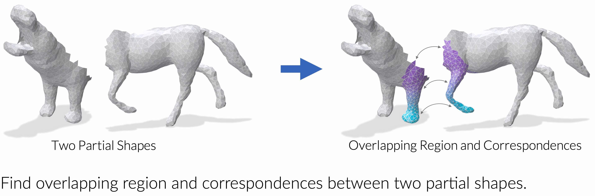

Paper:
Code Repository:
Partial-to-Partial Shape Matching via Correspondence Reflection
Accepted to CVPR 2025
Authors: Yizheng Xie*, Viktoria Ehm*, Paul Roetzer, Nafie El Amrani, Maolin Gao, Florian Bernard, Daniel Cremers
Abstract: EchoMatch is a novel framework for partial-to-partial shape matching. It introduces correspondence reflection to enable overlap prediction within a functional map framework, outperforming state-of-the-art methods.
Paper:
Code Repository: